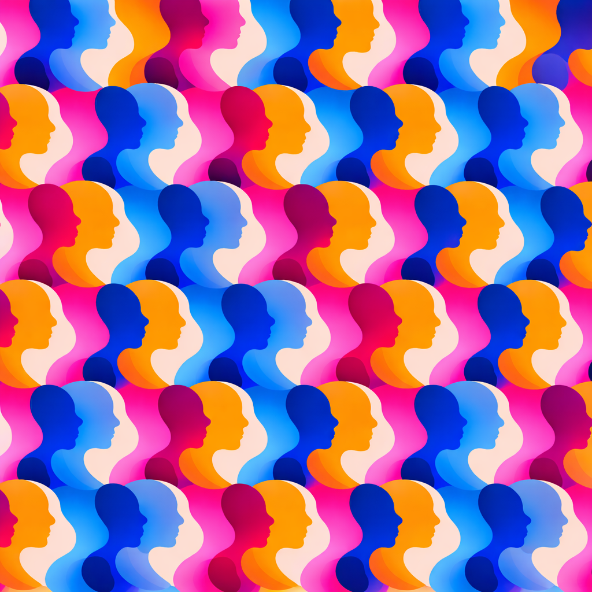
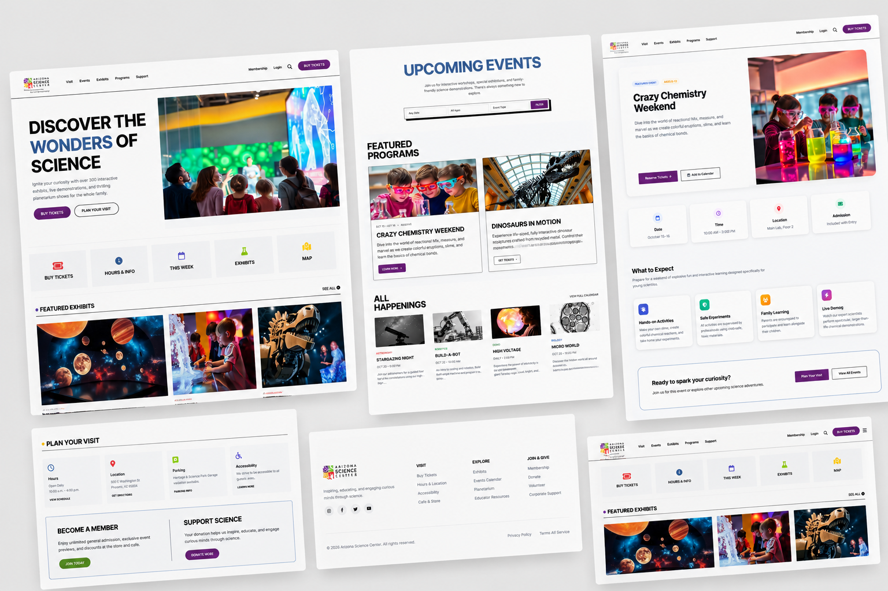
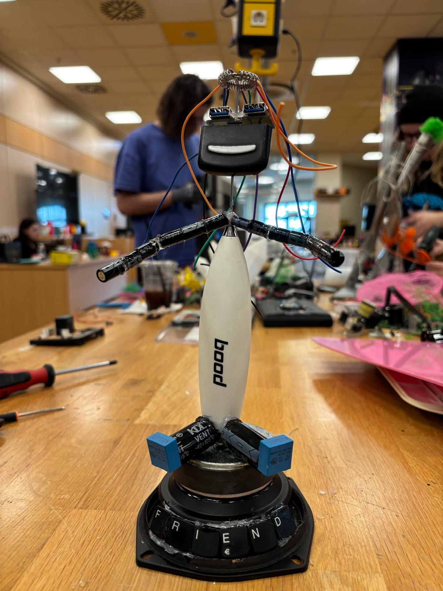
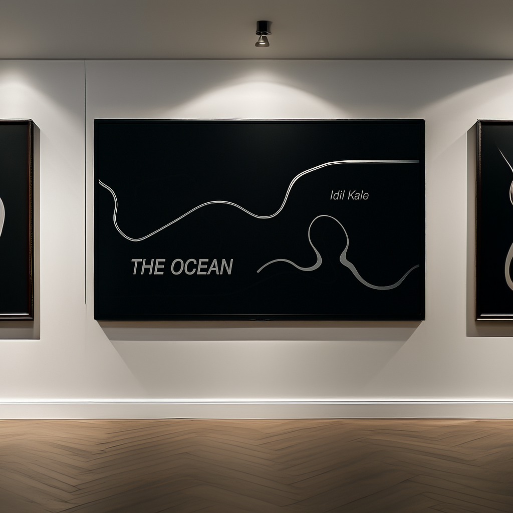

Case studies · newest first
My works
Research, product design and brand work. Every one of them started with a question about people.

RTS Lab
Unifying science, storytelling and interface for a research lab: a brand, the system behind it, and a working prototype.
Read the case study →
SIGnature
Redesigning how families, students and tourists plan a visit to the Arizona Science Center.
Read the case study →
Armoni
A warm, cohesive brand world, from logo and mascot to stationery, signage and a website.
Read the case study →
Multi-User VR Lab
A virtual biology lab where several people can learn side by side, with networked interaction and motion capture.
Read the case study →
UniSphere
A mobile app that helps international students connect and find advice they can actually trust before moving abroad.
Read the case study →Smaller, weirder, just for fun
Side projects

A small alien built from broken electronics, made with a friend.

A marketplace prototype built with React, Flask and MongoDB.

Identity and website for Sabancı University's HCI research lab.

Arduino and TouchDesigner, translating light into motion.

Climate words transformed through coded, reactive letterforms.

A curated generative image series about tension and contrast.

An After Effects study in fluid movement and atmosphere.

A personal mark exploring balance and negative space.